물류관리사-1교시 (2009-08-23 기출문제)
1과목: 물류관리론
1. 생산시점과 소비시점의 차이를 극복하기 위한 '시간적 효용' 가치창출에 가장 기여하는 물류기능은?
- 운송
- 하역
- 보관
- 포장
- 물류정보
(정답률: 알수없음)

2. 물류업무에 있어서의 문제를 해결하기 위하여 다른 부서의 인원이 모여 구성되는 형태로서 특히 항공우주산업, 물류정보시스템 개발과 같은 첨단 기술분야에서 효과적인 물류조직의 형태는?
- 매트릭스(Matrix)형 조직
- 사업부형 조직
- 직능형 조직
- 그리드(Grid)형 조직
- 물류자회사
(정답률: 80%)
3. 물류정보시스템에 관한 설명으로 옳지 않은 것은?
- 원재료 구입으로부터 완제품 유통에 이르기까지 제품의 흐름과정 및 이와 관련되어 발생하는 사실, 자료를 물류관리 목적에 알맞게 처리ㆍ가공하는 컴퓨터를 기반으로 하는 정보시스템이다.
- 주문정보를 정확하게 전달하는 기능, 물건의 움직임을 정확히 파악하고 전달하는 기능, 고객에게 정보를 제공하는 기능, 여러 계획과 실적을 잘 통제하는 기능 등의 역할이 기대된다.
- 재고관리시스템, 창고(보관)관리시스템, 수ㆍ배송관리시스템 등이 있다.
- VAN(Value Added Network), EDI(Electronic Data Interchange), CALS/EC(Computer Aided Logistics Support/Electronic Commerce) 등의 정보 통신망이 기업의 물류정보시스템을 지원한다.
- ERP(Enterprise Resource Planning)와 연동될 수 없다.
(정답률: 알수없음)
4. 기업들은 수요의 불확실성에 대비하기 위하여 적정량의 안전재고를 확보하고자 한다. 기업이 고객서비스 수준을 최적화하면서 최소의 안전재고를 확보하는 방안으로 옳지 않은 것은?
- 가격 안정화 전략을 실행한다.
- 수요 불확실성을 줄인다.
- 공급자와 협업적 관계를 구축한다.
- 고객서비스 수준을 낮춘다.
- 리드타임(Lead Time) 변동성을 줄인다.
(정답률: 알수없음)
5. 고객서비스 수준에 영향을 미치는 주문주기시간(Order Cycle Time)에 관한 내용으로 옳지 않은 것은?
- 주문주기시간은 주문전달방법, 재고정책, 주문처리과정 등에 관한 개선활동을 통하여 단축할 수 있다.
- 주문주기시간을 구성하는 주요 활동으로는 주문전달, 주문처리, 오더피킹(Order Picking) 및 생산, 인도, 회수 등을 포함한다.
- 주문처리 활동은 주문확인, 적재서류 준비, 재고기록 갱신, 주문정보의 관련부서 전달 등을 포함한다.
- 오더피킹(Order Picking)은 재고로부터 주문품 인출, 필요한 포장작업과 혼재작업 등을 포함한다.
- 주문주기시간과 관련된 주요 활동들의 일부는 동시 병렬적으로 발생할 수 있다.
(정답률: 알수없음)
6. 국토해양부 '국가물류기본계획(2006~2020)'의 5대 추진전략으로 옳지 않은 것은?
- 글로벌 물류체계 구축
- 고부가가치 물류산업의 육성
- 물류정책의 개별추진체계 확립
- 소프트웨어 물류시스템의 강화
- 하드웨어 물류 인프라 확충
(정답률: 알수없음)
7. 물류관리의 영역은 원자재, 제품, 반품, 폐기물 등의 물리적인 이동단계에 따라 분류할 수 있다. 영역별 물류활동에 관한 설명으로 옳지 않은 것은?
- 생산물류는 자재창고의 출고작업에서부터 생산공정으로의 운반ㆍ하역, 제품창고의 입고작업까지의 물류활동이다.
- 조달물류는 생산업자의 완제품 출하시부터 판매를 위해 출고되기 전까지의 물류활동이다.
- 판매물류는 제품의 판매가 확정된 후 출고되어 고객에게 인도될 때까지의 물류활동이다.
- 반품물류는 고객 클레임 제기 등으로 인해 판매된 제품의 반품에 따르는 물류활동이다.
- 폐기물류는 원자재와 제품의 포장재 및 수ㆍ배송 용기 등의 폐기물을 처분하기 위한 물류활동이다.
(정답률: 알수없음)
8. 다음 그림은 마케팅 활동과 물류비용 간의 관계를 나타낸 것이다. 그림의 (ㄱ) ~ (ㄹ)은 주문처리 및 정보비용과 더불어 고객서비스 수준을 제고시키기 위한 물류비용이다. (ㄱ) ~ (ㄹ)에 들어갈 수 있는 비용항목이 아닌 것은?
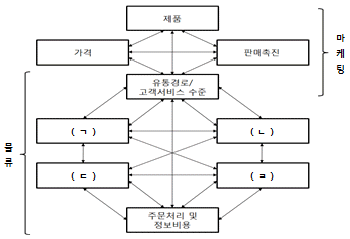
- 재고유지비
- 광고비
- 운송비
- 로트(Lot)량 변화비
- 창고비
(정답률: 알수없음)
9. 물류용어에 관한 설명으로 옳지 않은 것은?
- TRS(Trunked Radio System)는 중계국에 할당된 여러 개의 채널을 공동으로 사용하는 무선통신시스템이다.
- GPS(Global Positioning System)는 인공위성을 이용하여 실시간으로 이동체의 위치추적이 가능하다.
- EDI(Electronic Data Interchange)는 거래업체 간에 상호 합의된 전자문서 표준을 이용하여 컴퓨터 간에 구조화된 데이터를 교환한다.
- LAN(Local Area Network)은 제3자를 매개로 하여 기업 간의 자료를 교환하는 부가가치 통신망이다.
- DPS(Digital Picking System)는 표시기(Indicator)를 사용하여 물류센터 및 자재창고 등에서 주문출하와 관련된 피킹(Picking)과 분배작업을 지원하는 시스템이다.
(정답률: 알수없음)
10. 재고 회전율과 공헌이익이 높은 제품에 대한 관리 전략으로 옳은 것은?
- 이익을 향상시킬 수 있는 여지를 알아보기 위해 원가를 재검토하는데 우선순위를 둔다.
- 고객의 지리적 위치에 가까운 곳에 재고를 배치하여 재고 가용률을 높이는데 우선순위를 둔다.
- 정기적으로 평가하여 제품라인에서 탈락시키는 방안을 검토한다.
- JIT(Just In Time) 배송 전략을 적용하고, 중앙 집중장소에 보유하여 전체 재고투자를 감소시킨다.
- 고객서비스 수준을 조정하여 물류비용을 감소시키는데 중점을 둔다.
(정답률: 알수없음)
11. 포장에 관한 용어 설명으로 옳지 않은 것은?
- 단위포장 : 상품가치 향상을 목적으로 한 물품개개의 포장
- 상업포장 : 상품의 마케팅 기능을 강화하기 위한 포장
- 공업포장 : 재료비 및 생산원가 절감을 주목적으로 하는 포장
- 내부포장 : 수분, 습기, 열, 충격 완화를 목적으로 하는 포장
- 집합포장 : 낱개의 포장상품들을 하나의 단위화된 화물로 만드는 포장
(정답률: 알수없음)
12. 물류활동을 둘러싼 제반 환경에 관한 설명으로 옳지 않은 것은?
- 세계 경제는 빠른 국제화 추세를 보이고 있고, 이에 따라 국내물류와 국제물류의 구분이 더욱 명확해지고 있다.
- 정보통신기술의 발달로 물류정보시스템이 고도화되고 있으며, 물류정보기능의 중요성이 더욱 부각되고 있다.
- 환경규제가 점차 강화됨에 따라 회수물류에 대한 관심이 증대되고 있다.
- 다품종 소량화의 진전과 함께 가공도가 높은 제품으로 물류품목이 변화하고 있다.
- 제품기술이 발달하고 소비자의 구매욕구가 다양화함에 따라 제품 수명주기가 점차 단축되고 있다.
(정답률: 알수없음)
13. 물류전략의 하나인 유예(Postponement)의 설명으로 옳지 않은 것은?
- 유통에 있어서 제품의 최종 생산공정이 이루어지는 위치와 출하시점은 소비자의 주문이 있을 때까지 최대한 연기되어야 한다는 것을 말한다.
- 형태적 유예의 주요 사례는 상표부착, 포장, 조립, 수송, 보관 등으로 나눌 수 있다.
- 특정한 기술 및 공정특성, 제품특성, 그리고 시장특성들의 존재유무에 따라 유예전략의 활용 가능성이 달라 질 수 있다.
- 휴렛패커드의 데스크젯플러스, 셔윈윌리암스의 페인트, 델컴퓨터의 판매시스템 등은 성공적 유예전략 활용 사례들이다.
- 시간적 유예와 형태적 유예로 나뉜다.
(정답률: 알수없음)
14. 물류표준화를 위한 유닛로드시스템(Unit Load System)의 도입 과제로 옳지 않은 것은?
- 수송용 적재함 규격의 표준화
- 포장단위 치수의 표준화
- 운반ㆍ하역 장비의 표준화
- 보관설비의 표준화
- 주문량 및 주문시점의 표준화
(정답률: 알수없음)
15. 1100mm×1100mm 계열의 포장모듈이 아닌 것은?
- 220mm×220mm
- 365mm×220mm
- 550mm×275mm
- 550mm×365mm
- 550mm×400mm
(정답률: 알수없음)
16. 국가적으로 추진하여야 할 물류표준화에 관한 설명으로 옳지 않은 것은?
- 물류표준화는 물류체계의 종합적인 정비에 도움이 된다.
- 물류표준화는 고비용ㆍ저효율의 물류구조를 개선하기 위하여 필요하다.
- 물류표준화는 수송, 보관, 하역 등 각 물류기능의 상세한 작업방법까지 정의하여야 한다.
- 물류표준화의 근간이 되는 것은 화물을 유닛로드(Unit Load)화 하기 위한 기준치수이다.
- 물류표준화의 주요 대상은 포장용기, 랙(Rack), 트럭적재함 등이다.
(정답률: 알수없음)
17. 제품 A와 B를 취급하는 물류센터의 총 물류비는 5,000만원이며, 비용명세는 다음과 같다. 다음 자료를 이용하여 제품A의 물류비를 계산하면 얼마인가?
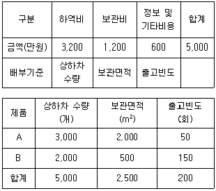
- 1,970만원
- 2,390만원
- 2,610만원
- 3,030만원
- 3,200만원
(정답률: 64%)
18. 제품의 종류에 따른 물류 특성에 관한 설명으로 옳지 않은 것은?
- 편의품(Convenience Product)은 소비자들이 빈번하게, 즉시, 여러 곳에 들르지 않고 구매할 수 있는 제품으로 식료품이나 담배 등을 말하며, 제품 가용성(Availability)과 접근성(Accessibility)의 제고가 중요하다.
- 전문품(Specialty Product)은 구매자가 상당한 노력과 시간을 들여 구매하려는 제품으로 주문형 자동차나 명품 등을 말하며, 유통망은 가장 제한적으로 제공된다.
- 선택품(Shopping Product)은 고객들이 여러 곳의 제품을 둘러보고 가격, 성능 등을 비교하여 관찰한 후 구입하는 제품으로 패션의류나 가구 등을 말하며, 편의품과 전문품 중간 정도의 판매점과 재고거점을 유지한다.
- 산업재의 경우는 다른 제품이나 서비스를 생산하기 위해 이용하는 제품이나 서비스를 말하며, 구매자가 판매자를 찾기 위해 노력하기 때문에 물류전략이 매우 중요하다.
- 전문품, 선택품 그리고 편의품으로 구성되는 소비재는 제품종류에 따라 물류의 특성이 달라진다.
(정답률: 알수없음)
19. 공급체인관리(SCM: Supply Chain Management)에 관한 설명으로 옳지 않은 것은?
- 공급체인관리는 원재료 구매에서부터 최종고객까지의 전체 물류흐름을 계획하고 통제하는 통합적인 관리 방법이다.
- 공급체인관리의 주요 응용기술로는 자동발주시스템, 크로스도킹(Cross Docking), 공급자 재고관리(VMI: Vendor Managed Inventory) 등이 있다.
- 공급체인관리의 기원은 1980년대 미국의 의류제품 부문에서 도입된 QR(Quick Response)에서 찾을 수 있다.
- 공급체인관리가 효과적으로 운영되기 위해서는 파트너들간의 상호협력과 신뢰가 중요하다.
- 공급체인 전반에 걸쳐 수요에 관한 정보를 집중화하고 공유함으로써 공급 리드타임(Lead Time)이 증가한다.
(정답률: 알수없음)
20. 채찍효과(Bullwhip Effect)를 방지하기 위한 노력으로 옳지 않은 것은?
- 판매시점 정보가 공급체인의 상류(Upstream)에 제공되어 정보 가시성을 확보한다.
- 공급체인의 각 구성원이 각자의 예측기술 및 방법을 최대한 활용하도록 한다.
- 공급자 재고관리(VMi: Vendor Managed Inventory)로 전환하도록 노력한다.
- 선구매(Forward Buying) 행위를 초래할 수량할인 등의 정책을 삼가한다.
- 일괄주문처리(Order Batching)를 지양한다.
(정답률: 알수없음)
21. 정보기술을 활용하는 경영전략의 하나로, 기간 업무뿐만 아니라 기업 활동에 필요한 모든 자원을 하나의 체계로 통합하여 운영하고 기업의 업무 처리 방식을 선진화시킴으로써 한정된 기업의 자원을 효율적으로 관리하여 생산성을 극대화하려는 기업 리엔지니어링 기법은?
- ERP(Enterprise Resource Planning)
- CALS(Computer Aided Logistics Support)
- EOS(Electronic Ordering System)
- MRP(Material Requirement Planning)
- CAO(Computer Assisted Ordering)
(정답률: 알수없음)
22. 기업물류비 산정항목 중 영역별 분류에 의한 구분이 아닌 것은?
- 조달물류비
- 사내물류비
- 위탁물류비
- 판매물류비
- 리버스(Reverse)물류비
(정답률: 알수없음)
23. 포장 합리화의 원칙으로 옳지 않은 것은?
- 대량화, 대형화의 원칙
- 집중화, 집약화의 원칙
- 규격화, 표준화의 원칙
- 일반화, 다양화의 원칙
- 재질변경의 원칙
(정답률: 알수없음)
24. 물류공동화에 관한 설명으로 옳지 않은 것은?
- 간선수송 공동화의 경우 도착지에서 출발지까지의 귀로 운송시 화물량 확보가 비용 절감에 중요하다.
- 간선수송의 공동화는 지역간, 거점간 운송을 지향하며 장거리 또는 용차 운송이 발생한다.
- 순회배송 공동화는 납품처가 서로 다른 지역간을 순회하면서 배송하는 형태로 납품처가 대형 규모이고 납품업체 수가 적은 경우 효과적이다.
- 중소기업의 경우 독자적인 물류시스템 구축이 어렵기 때문에 효율화 방안으로 물류공동화가 필요하다.
- 다빈도, 정기적 납품을 요하는 경우 물류공동화는 효율화 방안으로 적합하다.
(정답률: 알수없음)
25. JIT(Just In Time)에 관한 설명으로 옳지 않은 것은?
- JIT 방식은 정확한 시간에 정확한 수량으로 정확한 납품이 요구된다.
- JIT 방식은 재고비용의 낭비요소를 줄일 수 있다.
- JIT 방식에서 공급자와 발주자는 장기적인 종속거래관계를 형성한다.
- JIT 방식에서 납품 차질로 인한 생산지연에 대한 비용은 공급자가 부담한다.
- JIT 방식은 발주자의 구매업무 및 인력이 절감된다.
(정답률: 알수없음)
26. 밀기(Push)-끌기(Pull) 전략에 관한 설명으로 옳은 것은?
- 부품관리는 수요예측에 기반하고, 조립은 실제 고객주문에 기반하는 전략
- 부품관리는 실제 고객주문에 기반하고, 조립은 수요예측에 기반하는 전략
- 부품관리와 조립을 모두 수요예측에 기반하는 전략
- 부품관리와 조립을 모두 실제 고객주문에 기반하는 전략
- 공급체인상의 모든 활동을 실제 고객주문에 기반하는 전략
(정답률: 알수없음)
27. 보관시설의 수, 고객서비스 수준, 물류관련비용간의 관계를 간략히 도식화한 것으로 옳지 않은 것은?
- 보관시설의 수와 총비용의 관계
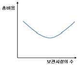
- 보관시설의 수와 수ㆍ배송비용의 관계
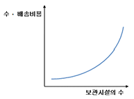
- 보관시설의 수와 재고비용의 관계
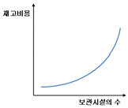
- 고객서비스 수준과 수ㆍ배송비용의 관계
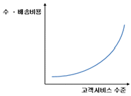
- 보관시설의 수와 고객서비스 수준의 관계
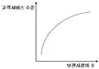
(정답률: 알수없음)
28. 4PL(Fourth Party Logistics)의 특징으로 옳지 않은 것은?
- 다양한 기업이 파트너로 참여하는 혼합조직 형태
- 합작투자 또는 장기제휴
- 이익분배를 통한 공통의 목표 설정
- 공급체인 전체의 관리와 운영
- 기업이 사내의 물류조직을 별도로 분리하여 전문 물류 자회사로 독립시켜 운영
(정답률: 알수없음)
29. 크로스도킹(Cross Docking)에 관한 설명으로 옳지 않은 것은?
- 크로스도킹은 창고나 물류센터에서 수령한 상품을 창고에서 재고로 보관하지 않고 바로 배송할 수 있도록 하는 물류시스템으로 통과형 물류센터라고도 한다.
- 크로스도킹을 실현하기 위해서는 ASN(Advanced Shipping Notice)과 JIT(Just In Time) 환경이 필요하다.
- 크로스도킹은 기 포장 크로스도킹과 중간처리 크로스도킹으로 구분할 수 있다.
- 크로스도킹은 파렛트 크로스도킹, 케이스 크로스도킹 및 트레일러 크로스도킹의 3가지 수준에서 구현될 수 있다.
- 크로스도킹은 재고의 효율적 통제를 통한 창고 비용 절감, 유통업체의 결품률 감소, 입출고 시간 및 비용 감소 등의 효과를 기대할 수 있다.
(정답률: 알수없음)
30. 제조(공급)업체와 유통(사용)업체간 협업전략을 통해 상품의 생산 및 공급을 공동으로 계획ㆍ예측하고 상품의 보충을 구현하는 기법은?
- CRP(Continuous Replenishment Program)
- EOS(Electronic Ordering System)
- CPFR(Collaborative Planning, Forecasting and Replenishment)
- SFA(Sales Force Automation)
- QR(Quick Response)
(정답률: 알수없음)
31. 다음의 구매입고이력과 생산출고이력을 참고하여, 선입선출(FIFO: First In, First Out)법으로 계산한 생산출고금액 (ㄱ), (ㄴ), (ㄷ)의 합은? (단, 해당 기간 이전의 재고는 없음)
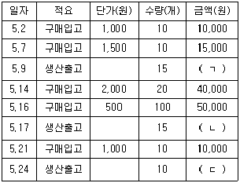
- 50,000원
- 60,000원
- 62,500원
- 65,000원
- 67,500원
(정답률: 알수없음)
32. 다음 그림은 S제조기업의 재고보관 위치를 도식화한 것이다. ( )안에 들어갈 것으로 옳게 짝지어진 것은?
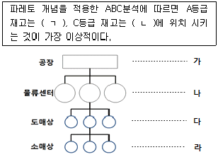
- ㄱ - 라, ㄴ - 가
- ㄱ - 다, ㄴ - 나
- ㄱ - 나, ㄴ - 라
- ㄱ - 가, ㄴ - 라
- ㄱ - 가, ㄴ - 다
(정답률: 알수없음)
33. 제품 수명주기에 따른 물류전략의 설명으로 옳지 않은 것은?
- 도입기의 물류서비스는 높은 수준의 재고 가용성과 유연성을 확보하는 전략이 필요하다.
- 성장기에는 규모의 경제를 고려하여 비용과 서비스간의 상충관계를 적극 고려하는 전략이 필요하다.
- 성숙기에는 고객별로 차별화되고 집중적인 물류 서비스 전략이 필요하다.
- 쇠퇴기에는 비용 최소화보다는 위험 최소화 전략이 필요하다.
- 성숙기에는 제품재고가 소수의 몇 개 거점에 집중되어 제품의 수송과 재고 재배치 전략이 필요하다.
(정답률: 알수없음)
34. 재고관리 모형과 관련하여 Q형 모형(고정주문량 모형)과 P형 모형(고정기간 모형)을 비교한 것으로 옳지 않은 것은?
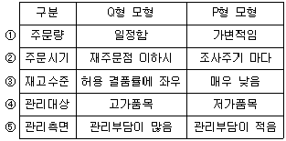
- ①
- ②
- ③
- ④
- ⑤
(정답률: 알수없음)
35. RFID(Radio Frequency Identification)에 관한 설명으로 옳지 않은 것은?
- 능동형(Active Type)은 3m이상의 장거리 전송이 가능하고, 센서와 결합 가능하다.
- 능동형(Active Type)은 배터리에 의한 가격 상승과 동작시간의 상대적 제한이 단점으로 인식된다.
- 수동형(Passive Type)은 판독기의 전파신호로부터 전원을 공급받는 방식이다.
- 수동형(Passive Type)은 구조가 간단하고 반영구적으로 사용가능하다.
- 능동형(Active Type)과 수동형(Passive Type)은 안테나 종류에 의한 구분방식이다.
(정답률: 알수없음)
36. 2008년 1,000억원의 매출을 올린 A기업의 매출액대비 수익률은 4%, 물류비는 250억원이었다. 만약, A기업이 2008년에 물류비를 20% 절감하였다면 매출액대비 수익률은?
- 6%
- 7%
- 8%
- 9%
- 10%
(정답률: 알수없음)
37. 주문을 받아서 주문정보를 창고나 발송부서에 전달한 후부터 주문받은 제품을 발송ㆍ준비하는데 걸리는 시간은? (재고로부터 인출, 적재지점으로 이동, 포장, 혼재 작업 포함)
- 주문 어셈블리시간(Order Assembly Time)
- 주문 전달시간(Order Transmittal Time)
- 주문 처리시간(Order Processing Time)
- 재고 가용성 확보시간(Stock Availability Time)
- 생산시간(Production Time)
(정답률: 알수없음)
38. 한국산업규격의 일반화물 취급표시에 관한 내용으로 바르게 짝지어진 것은? (순서대로 ㄱ, ㄴ)
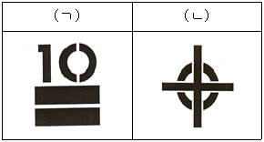
- 쌓는 단수제한, 무게중심위치
- 위쌓기 제한, 무게중심위치
- 위쌓기 제한, 취급주의
- 쌓는 단수제한, 굴림금지
- 위쌓기 제한, 쌓는 단수제한
(정답률: 알수없음)
39. 환경물류에 관한 설명으로 옳지 않은 것은?
- 환경을 중시하는 물류활동을 강조하는 개념이다.
- 최근 정부의 녹색성장정책 기조에 맞는 물류의 발전전략으로 이해할 수 있다.
- 물류활동의 모든 과정에서 환경에 대한 부정적 영향을 줄이는 방향으로 물류의사결정이 이루어진다.
- 이산화탄소의 배출을 고려한 수송수단 선택도 환경물류의 일종이다.
- 폐기물류와는 관련이 있으나 회수물류와는 관련이 없다.
(정답률: 64%)
40. 반품, 회수, 폐기를 포함하는 리버스(Reverse)물류와 가장 밀접한 것은?
- 조달물류
- 생산물류
- 국내물류
- 국제물류
- 판매물류
(정답률: 알수없음)
2과목: 화물수송론
41. 중견 제조기업인 A사는 물류효율화를 위해 전국에 산재해 있는 물류거점 수를 줄여 물류네트워크를 재구축하려고 한다. 이때 나타나는 효과가 모두 묶인 것은?
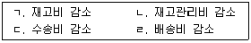
- ㄱ, ㄴ, ㄷ
- ㄴ, ㄷ, ㄹ
- ㄱ, ㄴ, ㄹ
- ㄱ, ㄷ, ㄹ
- ㄱ, ㄴ, ㄷ, ㄹ
(정답률: 알수없음)
42. 항공화물사고의 유형에 관한 설명으로 옳지 않은 것은?
- 화물사고의 유형은 크게 화물손상(damage), 지연(delay), 분실(missing) 등으로 나눌 수 있다.
- 화물손상 중 Mortality란 수송 중 동물이 폐사되었거나 식물이 고사된 상태를 의미한다.
- 화물손상 중 Spoiling이란 내용물이 부패되거나 변질되어 상품의 가치를 잃게 되는 경우를 의미한다.
- 지연 중 OVCD(Over-carried)란 예정된 목적지 또는 경유지가 아닌 곳으로 화물이 수송되었거나 발송준비가 완료되지 않은 상태에서 화물이 실수로 발송된 경우를 의미한다.
- 지연 중 SSPD(Short-shipped)란 예정된 항공편의 적하목록에는 표기되어 있지 않으나 화물의 일부가 탑재되는 경우를 의미한다.
(정답률: 알수없음)
43. 화물운송의 합리화를 위한 정부의 정책추진방향에 관한 설명으로 옳지 않은 것은?
- 공동 수ㆍ배송을 활성화 한다.
- 운송업체를 소형화시킨다.
- 트럭운송 위주의 운송을 철도나 연안해송으로 전환한다.
- 물류 아웃소싱을 적극 활용한다.
- 물류정보시스템을 구축한다.
(정답률: 40%)
44. 운송에 관한 설명으로 옳지 않은 것은?
- 운송의 장소적 효용은 생산과 소비의 공간적 거리의 격차를 해소하는 것이다.
- 운송의 시간적 효용은 보관의 시간적 효용과 유사하게 생산과 소비의 시간적 격차를 조정하는 것이다.
- 운송이란 유형(有形)의 재화이며, 물리적인 형태를 가지고 있다.
- 운송은 제품의 가격에 영향을 미친다.
- 운송은 소비자들이 다양한 제품을 선택할 수 있는 기회를 제공한다.
(정답률: 알수없음)
45. 파렛트 풀 시스템(PPS: Pallet Pool System)에 관한 설명으로 옳은 것은?
- PPS는 우리나라 표준 파렛트인 T-11형만 공동 사용되고 있다.
- PPS 이용으로 인하여 기업이 부담하는 비용이 더 발생할 경우 정부에서 그 차액을 지원해 준다.
- PPS는 공(空)파렛트 회수를 위해 전국 각지에 파렛트집배소를 설치ㆍ운영하고 있다.
- PPS는 일본에서 처음으로 제도화되었으며, 미국에서는 이를 활용하고 있지 않다.
- 계절적인 변동이 심한 제품의 경우 PPS 도입 효과가 거의 발생하지 않는다.
(정답률: 알수없음)
46. 수ㆍ배송시스템 설계 시 효율화 대상의 하드웨어 대책으로 가장 적합한 것은?
- 배송의 계획화(루트화, 다이아그램수송)
- 화물의 로트(lot)화
- 경로의 단순ㆍ간략화
- 공동화(고밀도화)
- 차량 적재함의 개선과 개량
(정답률: 알수없음)
47. 화물자동차 운송의 원가 항목 중 고정비에 해당하는 것은?
- 차량 수리비
- 차량 감가상각비
- 차량 타이어비
- 차량 연료비
- 고속도로 통행료
(정답률: 알수없음)
48. Hub-and-Spoke 시스템에 관한 설명으로 옳지 않은 것은?
- 다양한 노선을 보다 적은 노선으로 재구축하여 여객과 화물의 흐름을 집중할 수 있다.
- 모든 노선이 허브를 중심으로 구축된다.
- 출발지와 목적지를 단일 노선으로 직접 연결하여 운송시간을 절감할 수 있다.
- Spoke에서 집하된 화물은 Hub로 모아져서 목적지에 따라 운송된다.
- 항공운송과 정기선해운 부문에 도입되고 있다.
(정답률: 알수없음)
49. 다음 ( )안의 용어가 올바르게 묶인 것은? (순서대로 ㄱ, ㄴ, ㄷ)
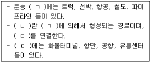
- Mode, Node, Link
- Mode, Link, Node
- Node, Link, Mode
- Node, Mode, Link
- Link, Node, Mode
(정답률: 알수없음)
50. 선박운송에 관한 설명으로 옳은 것으로 모두 묶인 것은?
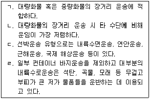
- ㄱ, ㄴ
- ㄱ, ㄴ, ㄷ
- ㄱ, ㄴ, ㄹ
- ㄱ, ㄷ, ㄹ
- ㄱ, ㄴ, ㄷ, ㄹ
(정답률: 알수없음)
51. 운송수단의 혼합이용 형태에 관한 설명으로 옳은 것은?
- 레일 워터 서비스(rail-water service)는 철도와 해운을 활용한 혼합 운송방식으로 소ㆍ중량화물과 고가품의 단거리 운송 시에 가장 경제적이다.
- 쉽 바지 서비스(ship-barge service)는 주로 중국과 일본 등의 근거리 해상운송 시 화물이 적재된 차량을 선박으로 운송하는 방식이다.
- 트럭 에어 서비스(truck-air service)는 트럭을 이용한 도로운송과 범선을 활용한 해상운송의 혼합 운송방식이다.
- 피기백 서비스(piggyback service)는 화물자동차의 기동성과 철도의 중ㆍ장거리 운송에 있어서의 장점을 결합한 혼합 운송방식이다.
- 피쉬백 서비스(fishyback service)는 항공운송과 해상운송의 장점을 활용한 운송방식으로서 운송비 절감, 운송시간 단축, 운송능률 증대 등의 이점이 있다.
(정답률: 알수없음)
52. 다음 그림은 거리에 따른 운임을 표시하고 있다. 거리에 따른 수송운임은 곡선으로 표시되어 있으며 점선은 비교를 위한 직선이다. 100km의 운임이 1,000원, 200Km의 운임이 1,800원, 300Km의 운임이 2,400원이라면 이들과 가장 관계가 깊은 운임의 형태는 무엇인가?
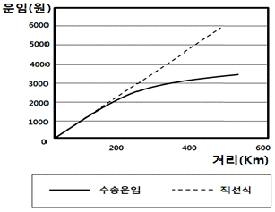
- 균일 운임
- 비례 운임
- 지역 운임
- 체감 운임
- 수요 기준 운임
(정답률: 알수없음)
53. 우리나라 A상사가 중국에 있는 다수의 업자들로부터 컴퓨터, TV, 의류 등을 구매하여 1개의 컨테이너에 적입한 후 해상을 통하여 수입하려 한다. 이 경우 적합한 운송형태는?
- Shipper → CFS → CY → 해상운송 → CY → Receiver
- Shipper → CFS → 해상운송 → CY → CFS → Receiver
- Shipper → CY → 해상운송 → CY → CFS → Receiver
- Shipper → CY → 해상운송 → CY → Receiver
- Shipper → CFS → CY → 해상운송 → CY → CFS → Receiver
(정답률: 알수없음)
54. 항공화물운송대리점과 항공운송주선업에 관한 비교 설명으로 옳은 것은?
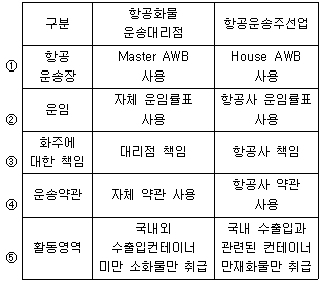
- ①
- ②
- ③
- ④
- ⑤
(정답률: 알수없음)
55. 3개 공급지의 공급량과 수요량이 각각 (15,10,20), (15,12,18)인 수송계획 문제가 있다. 공급지에서 수요지까지의 수송비는 수송표 각 셀의 좌측상단에 제시되어 있다. 보겔 추정법으로 초기해를 구한다면 공급지 3에서 수요지 3으로의 수송량은?
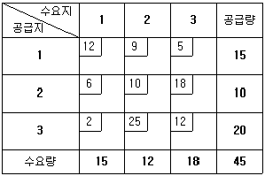
- 1
- 3
- 5
- 7
- 9
(정답률: 알수없음)
56. 공로운송을 중심으로 한 공동 수ㆍ배송 실시를 위한 전제조건에 해당하지 않는 것은?
- 물류표준화가 선행되어야 한다.
- 공동 수ㆍ배송을 주도하는 업체가 있어야 한다.
- 배송지역이 일정구역 안에 분포되어야 한다.
- 취급화물의 종류와 업종 통일이 전제되어야 한다.
- 일정지역 안에 공동 수ㆍ배송에 참여하는 다수의 업체가 존재하여야 한다.
(정답률: 알수없음)
57. 항공화물의 집하에 관한 설명으로 옳지 않은 것은?
- 화물의 집하는 간혹 대리점, 혼재업자, 총판매대리점 등을 통한 간접 집하도 이루어지지만, 항공사가 직접 화주를 상대로 하는 경우가 대부분이다.
- 대리점(agent)은 계약 항공사를 대리하여 집하활동을 수행하며, 이에 대한 대가로 항공사로부터 수수료(commission)를 받는다.
- 포워더(forwarder)는 항공사 운임의 중량체감체계를 이용, 다수의 화주나 대리점들로부터 직접 집하한 소량화물을 1건의 대형화물로 재편성하여 운송을 의뢰하고 그 운임차익을 수익으로 한다.
- 총판매대리점(general sales agent)은 미취항(off-line)지역의 판매망확장을 통한 수입증대를 목적으로 항공사가 임명하는 대리점이며, 당해 지역에서 항공사를 대행하여 화물 집하활동을 한다.
- 포워드(forwarder)는 출발지에서 화물을 집하하여 운송을 의뢰하고, 도착지에서 항공사로부터 화물을 인수하여 통관 및 인도업무를 수행한다.
(정답률: 알수없음)
58. 연간 수요가 365,000개, 제품당 연간 재고비용이 9원인 제품이 있다. 공장에서 창고로 철도를 이용하여 수송하고 있으며 평균 수송기간은 10일이다. 1년을 365일이라 할 때 연간 수송 중 재고비는?
- 80,000원
- 90,000원
- 100,000원
- 110,000원
- 120,000원
(정답률: 알수없음)
59. 운송비용 혹은 운임에 영향을 미치는 화물운송수단의 특성에 해당하지 않는 것은?
- 운송시간(transit time)
- 신뢰성(reliability)
- 접근성(accessibility)
- 분배(distribution)
- 보안ㆍ안전성(security)
(정답률: 40%)
60. 물류센터(D)에서 A, B 납품처까지의 배송시간은 각각 25분, 50분이며, A 납품처에서 B 납품처까지의 배송시간은 15분이다. 물류센터(D)에서 A 납품처를 갔다 온 후 다시 B 납품처까지 갔다 오는 배송방식 대신 A, B 납품처를 순차적으로 경유한 후 물류센터(D)로 돌아오는 순회배송을 도입한다면 Saving법에 의해 단축되는 배송시간은?
- 20분
- 30분
- 40분
- 50분
- 60분
(정답률: 알수없음)
61. 다음 그림은 차고지 D와 방문지 위치를 표시하고 있다. 12톤을 적재한 트럭이 각 방문지마다 2톤씩 배달하는 차량경로계획을 수립하려고 한다. Sweep법의 극좌표 기준점을 차고지 D로 하고 12시 방향에서 시작하여 반시계방향으로 첫 번째 차량경로를 결정하려고 한다. 이때 최초의 방문지는 점 10 이다. 그렇다면 첫 번째 차량경로의 마지막 방문지(차고지는 제외)는 몇 번인가?
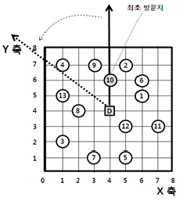
- 점 1
- 점 2
- 점 3
- 점 4
- 점 5
(정답률: 알수없음)
62. 효율적인 수ㆍ배송 설계를 위한 고려요소에 해당하지 않는 것은?
- 지정된 시간 내 목적지에 정확한 배송계획
- 최대 주문단위제 등을 이용한 수ㆍ배송 수요 안정화계획
- 적절한 유통재고량 유지를 위한 다이아그램(Diagram) 배송 등 수송계획
- 수주에서 출하까지의 작업표준화 및 효율화계획
- 총 물류비용 최소화 관점에서 배송센터 입지 및 배송계획
(정답률: 알수없음)
63. 부정기선의 용선계약에 관한 설명으로 옳지 않은 것은?
- 항해용선계약(Voyage Charter)은 한 항구에서 다른 항구까지 왕복 항해를 위해 체결되는 운송계약을 의미한다.
- 선복용선계약(Lump-sum Charter)은 항해용선계약의 변형된 형태이다.
- 일대용선계약(Daily Charter)은 항해용선계약의 변형으로 하루 단위로 용선하는 용선계약을 의미한다.
- 정기용선계약(Time Charter)은 모든 장비를 갖추고 선원이 승선해 있는 선박을 일정기간 동안 사용하는 계약을 의미한다.
- 나용선계약(Bare-boat Charter)은 선박만 용선하는 계약으로 인적ㆍ물적요소 전체를 용선자가 부담하고 운항 전반을 관리하는 계약을 의미한다.
(정답률: 알수없음)
64. “갑”과 “을” 두 기업이 생산하는 K제품의 시장가격은 9,000원이다. “갑”의 제조원가는 7,500원이며, 수송비는 500원이다. 경쟁업체 “을”의 제조원가가 8,000원일 때 “을”이 적자를 보지 않으면서 지불할 수 있는 제품당 최대 수송비는?
- 500원
- 1,000원
- 1,500원
- 2,000원
- 2,500원
(정답률: 알수없음)
65. 컨테이너화에 관한 설명으로 옳지 않은 것은?
- 수송수단간 연결의 효율성을 향상시킨다.
- 화물의 도난 혹은 손상을 줄여준다.
- 화물의 포장 및 장비 사용의 효율성을 향상시킨다.
- 화물 크기에 대한 제한이 없다.
- 노동생산성을 향상시킨다.
(정답률: 알수없음)
66. 화물자동차 운송의 유형 및 형태에 관한 설명으로 옳지 않은 것은?
- 물류거점간 대형트럭에 의한 대량화물운송을 간선운송이라고 한다.
- 물류거점간 간선운송이 아닌 물류거점과 소도시 또는 물류센터, 공장 등으로 화물을 집하, 배송하는 것을 지선운송이라고 한다.
- 중소형 트럭을 이용하여 철도역, 항만, 공항, 물류터미널 등 거점에서 화주 문전까지 운송하는 것을 배송이라고 한다.
- 정기화물과 같이 정해진 노선과 운송계획에 따라 운송서비스를 제공하는 것을 간선운송이라고 한다.
- 불특정다수의 타인화물을 유상으로 운송하는 것을 영업용 운송이라고 한다.
(정답률: 알수없음)
67. 수ㆍ배송 경로와 일정을 수립하는 원칙으로 옳지 않은 것은?
- 배송지역의 범위가 넓을 경우, 운행경로는 물류센터에서 가까운 지역부터 만들어 간다.
- 근접한 지역의 화물은 모아서 배송한다.
- 배송경로는 상호 교차되지 않도록 한다.
- 효율적인 배송을 위하여, 이용 가능한 대형차량을 먼저 배차한다.
- 픽업은 배송과 함께 이루어지도록 한다.
(정답률: 알수없음)
68. 정기선해운에 관한 설명으로 옳지 않은 것은?
- 해상의 특정항로에서 정해진 운항계획에 따라 예정된 항구를 규칙적으로 반복 운항하는 운송을 의미한다.
- 정기선운송인을 전용운송인 또는 계약운송인이라고도 한다.
- 불특정다수의 일반화물운송에 이용되며 선적화물은 다수의 개별화물로 구성된다.
- 정기선화물은 일반적으로 부정기선화물에 비하여 고가이기 때문에 운임 부담력이 높다.
- 화물의 종류, 수량에 관계없이 표준화된 계약인 선하증권을 사용한다.
(정답률: 알수없음)
69. 철도와 화물자동차 등 두 가지 이상의 운송수단을 연계할 목적으로 정부가 수도권, 부산권, 호남권 등 주요 권역별로 구축을 추진하고 있는 물류시설은?
- 화물조작장(CFS: Container Freight Station)
- 물류단지(유통단지)
- 부두밖 컨테이너 장치장(ODCY: Off-dock CY)
- 일반물류터미널(트럭터미널)
- 복합물류터미널(복합화물터미널)
(정답률: 알수없음)
70. 화물자동차 운임 결정에 관한 설명으로 옳지 않은 것은?
- 운송거리가 길어질수록 총 운송원가는 증가하여 운임이 증가한다.
- 동일한 중량이라면 부피나 면적이 적은 화물이 밀도가 높다.
- 화물의 밀도가 동일할지라도 적재율이 떨어지면 운송량이 적어져 단위당 운송비는 낮은 수준에서 결정된다.
- 밀도가 높은 화물은 동일한 용적을 갖는 적재용기에 많이 적재하고 운송할 수 있게 되어, 밀도가 높을수록 단위당 운송비는 낮아진다.
- 운송되는 화물의 단위가 클수록 대형차량을 이용하게 되며 대형차량을 이용할수록 운송단위당 부담하는 고정비는 낮아지게 된다.
(정답률: 알수없음)
71. 선박의 용적기준 톤수 및 중량톤에 관한 설명으로 옳지 않은 것은?
- 순톤수(Net Tonnage)는 직접 상행위에 사용되는 공간, 즉 화물이나 여객에 제공되는 용적크기이다.
- 총톤수(Gross Tonnage)는 일반적으로 상선의 크기를 나타내며, 각국의 보유선복량을 비교할 때 사용된다.
- 배수톤수(Displacement Tonnage)는 선박의 전 중량을 말하는 것으로 선체 수면하의 부분인 배수용적에 상당하는 물의 중량이다.
- 재화중량톤수(Dead Weight Tonnage)는 주로 군함의 크기를 나타낼 때 사용된다.
- 운하톤수(Canal Tonnage)는 수에즈 운하톤수, 파나마 운하톤수 등과 같이 특정 운하와 관련된다.
(정답률: 알수없음)
72. 녹색물류체계 구축에 관한 내용과 관계가 없는 것은?
- 고비용 저효율 도로운송에서 저비용 고효율 연안 및 철도운송으로의 전환
- 트랜스퍼 크레인(Transfer Crane)의 에너지 공급체계를 경유에서 전기로 전환
- 접안선박이 육상전기를 사용할 수 있도록 육상전기 사용시설(AMP)의 설치
- 녹색물류기업인증제도의 도입과 시행
- AEO(Authorized Economic Operator)제도의 도입과 시행
(정답률: 알수없음)
73. 다음 그림은 S에서 T까지의 최대유량을 구하는 문제이다. 가지의 수는 가지의 용량을 의미한다. 현재 가지(2,4)의 용량은 2이다. 만약 가지(2,4)의 용량이 2에서 6으로 변한다면 최대유량의 증가분은?
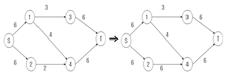
- 0
- 1
- 2
- 3
- 4
(정답률: 알수없음)
74. 물류공동화에 관한 설명으로 옳은 것으로 모두 묶인 것은?
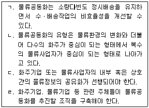
- ㄱ
- ㄱ, ㄴ
- ㄱ, ㄴ, ㄷ
- ㄱ, ㄴ, ㄹ
- ㄱ, ㄴ, ㄷ, ㄹ
(정답률: 알수없음)
75. 프레이트 포워더(freight forwarder)에 관한 설명으로 옳지 않은 것은?
- 프레이트 포워더의 유형은 크게 운송인형 프레이트 포워더와 운송주선인형 프레이트 포워더로 구분할 수 있다.
- 프레이트 포워더는 직접 운송수단을 보유하지 않은 채 고객을 위하여 화물운송의 주선이나 운송행위를 하기도 한다.
- 프레이트 포워더는 운송주선인, 복합운송인 등으로 혼용하여 사용되고 있다.
- 프레이트 포워더는 통상 특정화주의 대리인으로서 화주의 명의로 운송계약을 체결한다.
- NVOCC(무선박운송인)는 프레이트 포워더형 복합운송인이다.
(정답률: 알수없음)
76. 복합운송에 관한 설명으로 옳지 않은 것은?
- 화물운송에 있어서 두 가지 이상의 수송수단을 이용하는 것을 복합운송이라 한다.
- 이용되는 각 운송수단의 장점을 결합하여 단일운송수단의 한계를 어느 정도 극복한다.
- 운송규제의 완화, 세계무역의 증대, 글로벌 기업환경 변화 등이 복합운송 성장의 요인으로 작용하였다.
- 복합운송에서 가장 빈번하게 사용되는 운송수단은 화물자동차이다.
- 소형 고가의 제품은 통상 해상운송과 도로운송이 연계된 복합운송을 이용한다.
(정답률: 알수없음)
77. S 전자는 광주에서 생산한 제품을 광양항을 이용하여 미주, 유럽에 수출하고 있는 회사이다. 다음 물량을 광주에서 광양항까지 40ft 컨테이너로 운반하려면 하루에 평균 몇 대의 컨테이너 차량이 필요한가? (단, 광양에서 광주로 회송 시 공차운행 한다고 가정한다)
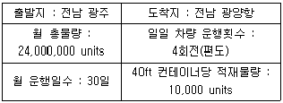
- 15대
- 19대
- 20대
- 25대
- 27대
(정답률: 알수없음)
78. 물류보안 및 안전에 관한 설명으로 옳지 않은 것은?
- CSI는 미국으로 운송되는 모든 수출화물에 대해 선적지에서 선적 24시간 전까지 미국세관에 적하목록 제출을 의무화하는 규정이다.
- C-TPAT은 미국 CBP가 도입한 반테러 민관 파트너십 제도이다.
- ADR은 각국 정부와 항만관리당국, 선사들이 갖춰야 할 보안관련 조건들을 명시한 국제해상보안규약이다.
- 위험물컨테이너점검제도는 위험물의 적재, 수납, 표찰 등에 관한 국제규정인 국제해상위험물규칙(IMDG Code)의 준수여부를 점검하고, 위험물 운송 중 사고를 예방하기 위한 제도이다.
- 항만보안법은 컨테이너를 통해 이동하는 WMD 등 위험화물을 사전에 통제하는 데 필요한 거의 모든 조치가 포함되어 있다.
(정답률: 알수없음)
79. 공동수ㆍ배송의 특징을 모두 묶은 것은?
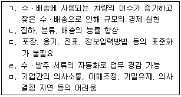
- ㄱ, ㄴ, ㄷ
- ㄱ, ㄹ, ㅁ
- ㄴ, ㄹ, ㅁ
- ㄴ, ㄷ, ㅁ
- ㄱ, ㄴ, ㄹ, ㅁ
(정답률: 알수없음)
80. 다음 ( )안의 숫자가 순서대로 올바르게 연결된 것은?
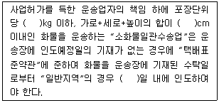
- 20 - 150 - 2
- 30 - 150 - 2
- 20 - 150 - 3
- 30 - 160 - 2
- 30 - 160 - 3
(정답률: 알수없음)
3과목: 국제물류론
81. 단위당 비용(Unit Cost)을 낮추거나 규모의 경제를 실현하기 위해 취해지고 있는 국제물류의 동향으로 옳지 않은 것은?
- 컨테이너 선박의 대형화
- 항만 수심의 증심(增深)
- Post Panamax Crane의 출현
- 정기선사간 전략적 제휴 확대
- 기항항만(Calling Ports) 수의 확대
(정답률: 알수없음)
82. 국제물류관리의 발전단계 순서가 옳게 나열된 것은?
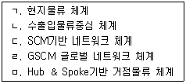
- ㄱ→ㄴ→ㄹ→ㄷ→ㅁ
- ㄴ→ㄱ→ㅁ→ㄷ→ㄹ
- ㄴ→ㄱ→ㄹ→ㄷ→ㅁ
- ㅁ→ㄱ→ㄷ→ㄴ→ㄹ
- ㅁ→ㄴ→ㄹ→ㄷ→ㄱ
(정답률: 알수없음)
83. 국제물류와 국내물류를 비교 설명한 것 중 옳지 않은 것은?
- 국제물류는 통관 등 각종 수속 때문에 국내물류보다 시간이 더 소요된다.
- 국제물류는 국내물류보다 화물운송 시간지연, 화물손실 등 위험요소가 더 많다.
- 국제물류에서 하역의 기능은 국내물류에 비하여 중요성이 낮다.
- 다수의 국가와 연결되는 국제물류는 일반적으로 국내물류보다 물류비용이 더 소요된다.
- 통관, 포장방법, 언어, 거래관습 등에 따라 국제물류는 국내물류에 비하여 물품취급이 어렵다.
(정답률: 알수없음)
84. 국제물류시스템의 한 형태를 설명한 것이다. 이 형태에 해당하는 것은?
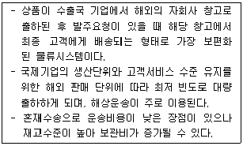
- 통과시스템(Transit System)
- 직송시스템(Direct System)
- 고전적시스템(Classical System)
- 다국행창고시스템(Multi-Country Warehouse System)
- 허브 & 스포크시스템(Hub & Spoke System)
(정답률: 알수없음)
85. 미국이 물류보안체계 수립을 위해 추진한 내용으로 옳지 않은 것은?
- SOLAS(Safety of Life at Sea Convention) 개정
- C-TPAT(Customs Trade Partnership Against Terrorist) 시행
- TSA(Transportation Security Administration) 설립
- 24 Hour Advance Manifest Rule 시행
- Maritime Transportation Security Act of 2002 제정
(정답률: 46%)
86. 항공운송에서 위험화물(Dangerous Goods)에 관한 설명으로 옳지 않은 것은?
- 위험화물은 항공운송 중 발생하는 기압, 온도, 진동 등의 변화에 따라 항공기, 인명, 화물 등에 피해를 줄 수 있는 화물을 뜻한다.
- IATA의 위험화물규정(Dangerous Goods Regulations)에는 위험화물의 수송여부 및 제한사항이 포함되어 있다.
- IATA의 위험화물규정(Dangerous Goods Regulations)상 위험품목은 폭발성 물질, 가스, 인화성 액체 등 9개로 분류되어 있다.
- 항공사는 위험화물규정(Dangerous Goods Regulations)에 따라 포장, 표기, 표찰 등을 해야 한다.
- IATA의 위험화물규정(Dangerous Goods Regulations)은 매년 1월 1일부로 신판(New Edition)이 발간된다.
(정답률: 알수없음)
87. ( )안에 들어갈 용어를 올바르게 나열한 것은? (순서대로 ㄱ, ㄴ)
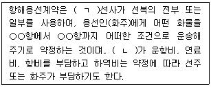
- 부정기, 선주
- 정기, 선주
- 부정기, 화주
- 정기, 화주
- 정기, 용선자
(정답률: 알수없음)
88. 선주가 편의치적(Flags of Convenience)을 선호하는 이유로써 옳지 않은 것은?
- 선박의 등록세, 톤세 등 세제에 대한 이점이 있기 때문이다.
- 선박의 운항수입에 대한 부가세, 법인세 등이 낮기 때문이다.
- 선박의 운항 및 안전기준 등의 규제가 자국에 비해서 적기 때문이다.
- 선진 해운국의 선주들이 고임금의 자국선원을 승선시키지 않아도 되기 때문이다.
- 자국 정부로부터 재정 및 금융 지원을 받을 수 있기 때문이다.
(정답률: 알수없음)
89. 항공화물운송장(AWB)과 선하증권(B/L)의 설명 으로 옳지 않은 것은?
- 항공화물운송장은 양도성이 없고, 선하증권은 일반적으로 양도성이 있다.
- 항공화물운송장은 송화인이 작성함을 원칙으로 하며, 선하증권은 선박회사 또는 국제물류주선업자가 작성한다.
- 항공화물운송장은 지시식 백지배서(Blank Endorsement)로 발행되며, 선하증권은 기명식으로 발행된다.
- 항공화물운송장은 운송사실을 증명하는 단순한 증거증권이지만, 선하증권은 물권적 권리를 표시하는 권리증권이다.
- 항공화물운송장과 선화증권은 송화인과 운송인 간에 운송계약이 체결되었다는 추정적 증거서류이다.
(정답률: 알수없음)
90. 신협회적하약관의 운송약관(Transit Clause)에 관한 설명 중 보험계약의 효력이 종료되는 사유로 옳지 않은 것은?
- 보험증권상에 기재된 목적지의 수화인 최종 창고 또는 기타 최종 창고에 인도할 때
- 최종 양화항에서 선박으로부터 양화작업 완료 후 60일이 경과될 때
- 60일이 경과되지 않았다 하더라도 변경된 목적지를 향해 운송을 개시할 때
- 재선적, 강제하역 등 운송인의 자유재량권 행사에 따라 피보험자가 통제할 수 없는 지연이 발생된 때
- 보험증권에 명시된 목적지 여부를 불문하고 통상의 운송 과정이 아닌 보관 또는 할당이나 분배를 위해 다른 장소에 인도할 때
(정답률: 알수없음)
91. 국제운송주선인협회(FIATA)의 복합운송 선하증권(FBL)에 관한 설명으로 옳지 않은 것은?
- 혼재선하증권(House or Forwarder's B/L)의 일종이다.
- 국제운송주선인협회가 발행하고, 국제상업회의소(ICC)가 인정한 서류이다.
- 단일 운송수단을 사용한 경우에는 적용될 수 없다.
- 화물에 대한 권리를 표창하며, 배서에 의하여 소지인은 증권면에 표시된 화물을 수령 또는 양도할 권리를 갖는다.
- UCP 600에서는 운송인 또는 그 대리인의 자격을 갖추지 않은 운송주선인이 발행한 운송서류는 국제운송주선인협회가 발행한 운송서류라 하더라도 수리 거절되도록 규정하고 있다.
(정답률: 알수없음)
92. 1980년 유엔무역개발회의(UNCTAD)에서 채택된 UN국제물품복합운송조약(United Nations Convention on International Multimodal Transport of Goods)의 내용에 관한 설명으로 옳지 않은 것은?
- 하나의 복합운송계약에 의할 것
- 하나의 복합운송인이 관계할 것
- 최소 두 종류 이상의 운송수단을 이용할 것
- 운송물의 수령지 또는 인도지가 체약국 내에 있는 2국 간의 복합운송계약을 적용 대상으로 할 것
- 운송도중 사고 발생 구간에 대한 책임체계는 기존 강행법규나 국제조약이 우선 적용될 것
(정답률: 알수없음)
93. 1944년 시카고회의에 의거 1947년에 발족된 유엔 산하기관으로서 국제민간항공의 안전성 확보와 항공질서 감시를 위하여 설립된 항공운송 관련기구는?
- FIATA
- IATA
- ACI
- ICAO
- IMO
(정답률: 60%)
94. 국제운송서류에 관한 설명으로 옳지 않은 것은?
- M/R(Mate's Receipt) : 화물의 본선 반입 후 일등항해사가 선적지시서와 대조하면서 화물을 수취한 다음 화물수령의 증거로 발급하는 서류
- L/I(Letter of Indemnity) : 사고부선하증권을 발급받은 수출상이 무사고선하증권을 발급받기 위하여 거래은행에 제출하는 책임각서
- M/F(Manifest) : 선적 완료 후 선사에 의해 발행되는 적재화물의 명세표
- L/G(Letter of Guarantee) : 수입화물이 이미 도착했으나 선하증권 원본이 도착하지 않아 수입상이 발행은행으로부터 발급받아 선사에 제출하여 화물을 미리 찾을 수 있는 서류
- S/R(Shipping Request) : 화주가 선박회사에 제출하는 운송의뢰서
(정답률: 알수없음)
95. 정기선 해상운임 중 부대비(Additional Charge)에 해당되지 않는 것은?
- 지체료(Detention Charge)
- 화물입출항료(Wharfage)
- 터미널화물처리비(Terminal Handling Charge)
- 서류발급비(Documentation Fee)
- 입체지불수수료(Disbursement Amount)
(정답률: 알수없음)
96. 부정기선 해운서비스에 관한 설명으로 옳지 않은 것은?
- BDI(Baltic Dry Index) 지수에 의해 전체적인 용선시장의 흐름을 알 수 있다.
- 선주와 용선자 간에는 용선계약서(Charter Party)를 작성한다.
- 일반적으로 용선중개인이 개입하여 화주에게 적합한 선박을 구해준다.
- 완전경쟁적 시장 형태를 보이며, 소규모 조직으로도 영업이 가능하다.
- 공시된 운임률표(Tariff)가 있다.
(정답률: 알수없음)
97. 선박을 운항할 수 있는 상태로 유지하기 위해 소요되는 비용을 1DWT-1Month 기준으로 계산하는 방식은?
- Hire Base
- Demurrage
- Charter Base
- Despatch Money
- Lump Sum Freight
(정답률: 알수없음)
98. 해상운송과 관련된 설명으로 옳지 않은 것은?
- GENCON서식은 정기선 계약서의 표준 서식이다.
- Lay-up Point는 운항에 의하여 입는 손실과 계선비가 동액이 되는 수준의 운임을 말한다.
- Ro-Ro선은 본선의 전후방 또는 선측에 설치되어 있는 램프(Ramp)를 통하여 컨테이너를 수평으로 선적하고 양화할 수 있는 선박이다.
- Draft(흘수)는 선박이 물속에 잠겨 있는 부분의 깊이로서 선박의 감항능력을 측정하는 데 매우 중요한 기준이 된다.
- DWT는 화물선의 최대 적재능력을 나타내는 것으로 선박의 매매와 용선료의 기준이 된다.
(정답률: 알수없음)
99. 국제소화물일관운송(국제특송)에 관한 설명 중 옳은 것으로 모두 묶인 것은?
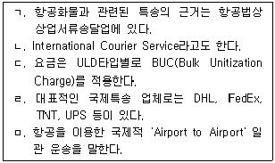
- ㄱ, ㄴ, ㄷ
- ㄱ, ㄴ, ㄹ
- ㄴ, ㄷ, ㄹ
- ㄴ, ㄹ, ㅁ
- ㄷ, ㄹ, ㅁ
(정답률: 알수없음)
100. 국제운송에서 부피 또는 무게를 나타내는 설명으로 옳지 않은 것은?
- 항공운송에서는 6,000cm3를 1kg으로 환산한다.
- 1CBM은 가로×세로×높이를 10cm×10cm×10cm로 환산한 것이다.
- 해상운임 계산 시 중량과 용적의 분기점은 1CBM당 1Metric Ton이 된다.
- 1Long Ton은 2,240lbs이며 약 1,016kg이다.
- 1Metric Ton은 1,000kg이다.
(정답률: 알수없음)
101. 국제복합운송에 관한 설명으로 옳지 않은 것은?
- 화주의 요구에 부응하여 전체적인 운송시스템을 최적화함으로써 운송 효율성을 제고할 수 있다.
- 해륙복합운송의 대표적인 형태로 랜드브리지를 들 수 있다.
- 국제복합운송의 주체는 국제물류주선인(Freight Forwarder)이다.
- 국제물류주선업을 경영하려는 자는 국토해양부장관으로부터 허가를 받아야 한다.
- 최근에는 해상과 항공을 이용하는 해공복합운송(Sea & Air)이 많이 활용되고 있다.
(정답률: 알수없음)
102. 함부르그규칙(Hamburg Rules 1978)상의 용어의 정의이다. ( ) 안에 들어갈 용어로 옳은 것은?
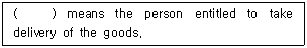
- Consigner
- Shipper
- Carrier
- Actual Carrier
- Consignee
(정답률: 알수없음)
103. “International Convention for the Unification of certain Rules of Law Relating to Bills of Lading”(일명 선하증권통일조약)으로서 1924년 8월에 체결된 국제조약은?
- 하터법(Harter Act)
- 헤이그규칙(Hague Rules)
- 헤이그-비스비규칙(Hague-Visby Rules)
- 함부르그규칙(Hamburg Rules)
- 바르샤바조약(Warsaw Convention)
(정답률: 알수없음)
104. 극동지역을 기점으로 중국의 연운항까지 해상운송한 후에 철도로 중국대륙을 관통하여 유럽까지 연결하는 복합운송루트는?
- TCR
- TSR
- ALB
- TMR
- TAR
(정답률: 알수없음)
1⑤. 수출 FCL의 화물이동 과정이 순서대로 올바르게 나열된 것은?
- Gate→On-dock CY→Marshalling Yard→Apron
- On-dock CY→Gate→Marshalling Yard→Apron
- Gate→Apron→Marshalling Yard→On-dock CY
- Off-dock CY→Gate→Apron→Marshalling Yard
- Gate→Off-dock CY→On-dock CY→Apron
(정답률: 알수없음)
106. 가격 산출의 기초로 사용하기 위해 수입상의 요청으로 수출상이 발송하는 송장(Invoice)은?
- Indent Invoice
- Shipping Invoice
- Proforma Invoice
- Customs Invoice
- Consular Invoice
(정답률: 알수없음)
107. 보기는 신용장 상의 선하증권 조건에 관한 설명이다. 옳지 않은 것은?
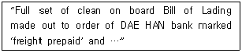
- 발행된 B/L 전통을 대한은행에 제출해야 한다.
- B/L 상에 포장 상태나 상품에 대한 하자 표시가 없어야 한다.
- B/L은 기명식이나 지시식으로 발행되어야 한다.
- 화물이 본선에 선적되었다는 표시가 있어야 한다.
- 선하증권 상의 운임은 선불이라고 기재되어야 한다.
(정답률: 알수없음)
108. 신용장에서 특별히 부보금액에 대한 명시가 없는 경우에 US$ 50,000의 어떤 물품을 CIF New York 조건으로 수출할 경우 매도인이 부보 해야 할 보험금액은?
- US$ 40,000
- US$ 45,000
- US$ 50,000
- US$ 55,000
- US$ 60,000
(정답률: 알수없음)
109. 보기 조건에 의하여 계약물품의 CFR가격을 계산하면 얼마인가?
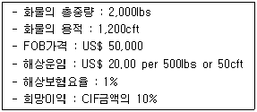
- US$ 50,020
- US$ 50,480
- US$ 50,500
- US$ 50,520
- US$ 51,000
(정답률: 알수없음)
110. 수입통관절차에 관한 설명으로 옳지 않은 것은?
- 수입신고는 관세법상 화주, 관세사, 관세사법인, 통관취급법인이 할 수 있다.
- 수입신고는 물품 반입일 또는 장치일로부터 3개월 이내에 하여야 한다.
- 수입신고를 함으로써 적용법령, 과세물건, 납세의무자가 확정된다.
- 물품을 수입하고자 하는 자는 당해 물품이 장치된 보세구역을 관할하는 세관장에게 수입신고를 하여야 한다.
- 수입신고 시기는 출항 전 수입신고, 입항 전 수입신고, 입항 후 보세구역 도착 전 수입신고 및 보세구역 장치 후 수입신고의 네 가지 유형으로 구분된다.
(정답률: 알수없음)
111. 선적해야 할 컨테이너를 하역 순서대로 정렬해 두거나 양화된 컨테이너를 일시적으로 배치해 놓는 부두 내의 장소는?
- ODCY
- Apron
- CFS
- Berth
- Marshalling Yard
(정답률: 알수없음)
112. 조선 및 해운업의 시황을 나타내는 지표와 관련이 없는 것은?
- BDI(Baltic Dry Index) 지수
- MRI(Maritime Research Index) 지수
- CPI(Consumer Price Index) 지수
- HR(Howe Robinson Container Index) 지수
- WS(Worldwide Tanker Nominal Freight Scale) 지수
(정답률: 알수없음)
113. 관세법상 특허보세구역이 아닌 것은?
- 보세창고
- 보세공장
- 보세전시장
- 보세판매장
- 세관검사장
(정답률: 알수없음)
114. 300상자의 장난감을 ICC(B)조건으로 US$ 300,000로 부보하였다. 손실내역이 다음과 같을 때 지급보험금은 얼마인가?
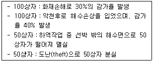
- US$ 70,000
- US$ 80,000
- US$ 90,000
- US$ 120,000
- US$ 170,000
(정답률: 알수없음)
115. 화물의 멸실과 훼손에 대한 운송인의 배상책임 한도액을 정하고 있는 국제협약이 아닌 것은?
- CIM협약
- CMR협약
- CSC협약
- Warsaw협약
- Hague-Visby규칙
(정답률: 알수없음)
116. 상품의 과세가격이 100만원이고, 관세율이 6%일 때 수입통관 시 납부해야 하는 총 세액은? (단, 관세와 부가가치세만 부과된다고 가정한다)
- 156,000원
- 166,000원
- 167,000원
- 200,000원
- 206,000원
(정답률: 알수없음)
117. 선하증권의 작성 시 해당란의 기재요령에 대한 설명으로 옳지 않은 것은?
- Shipper : 송화인의 성명 또는 상호를 기재하며, 혼동이 예상될 때는 주소를 명기하여 명확히 하는 것이 좋다.
- Voyage No. : 선박의 운송횟수로 선박회사가 임의로 정한 일련번호가 기재되는데 1항차는 출발항에서 목적항을 거쳐 출발항에 회항하는 것을 원칙으로 한다.
- B/L No. : 선사가 임의로 규정한 표시번호를 기재하며, 통상 선적항과 양화항의 알파벳 두문자를 이용하고 번호는 일련번호를 쓴다.
- Rate : 중량톤 당 운임단가 및 CFS Charge, Wharfage, BAF, CAF 등이 기재된다.
- No. of Original B/L : Original B/L의 발행통수를 기재하며, 통상 3통을 한 세트로 발행하는데 그 숫자에는 제한이 없다.
(정답률: 알수없음)
118. Incoterms 2000의 무역거래조건이다. ( ) 안에 들어갈 내용으로 옳은 것은?
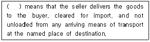
- Delivered At Frontier
- Carriage and Insurance Paid To
- Carriage Paid To
- Delivered Duty Unpaid
- Delivered Duty Paid
(정답률: 알수없음)
119. 화환신용장통일규칙(UCP600)의 내용이다. ( )안에 공통으로 들어갈 내용으로 옳은 것은?
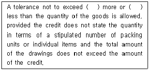
- 3%
- 5%
- 7%
- 10%
- 12%
(정답률: 알수없음)
120. 국제물류분쟁을 해결하는 방법 중 상사중재에 관한 설명으로 옳은 것은?
- 뉴욕협약에 가입된 국가 간에는 중재판정의 승인 및 집행을 보장받는다.
- 중재는 2심ㆍ3심에서 항소ㆍ상고가 가능하다.
- 중재는 원칙적으로 공개적으로 진행된다.
- 중재는 법원의 확정판결과 동일한 효력이 없다.
- 중재는 소송에 비해 분쟁해결에 시간과 비용이 많이 든다.
(정답률: 알수없음)